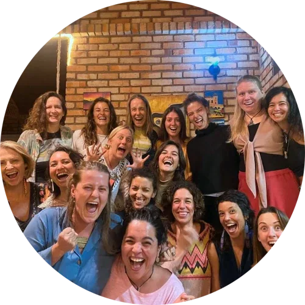

Women of Earth
-
Women of
Earth
Women carry seeds of regenerative cultures.
The Women of Earth take radical and evolutionary actions that source cultures contexted in Radical Responsibility, Nonmaterial Value, and Initiations.
-
The Movement
The Women of Earth is a global movement of Women graduating from Patriarchy, walking beyond the edge of modern civilization and inventing bridges to regenerative culture, Archiarchy, together.
As we leave behind the outdated thoughtware that has kept us in prisons, we enter a path of initiation to jack-into our inner and outer infinite resources. This path has no end, enlightment is not the goal.
When women wake up from dormancy, then naturally take radical responsibility for the visions of life-giving human cultures they envision.
The Women of Earth Movement is space for women to invent and empower each other to be what we want instead of surviving in ecocidal modern culture.
Women of Earth after an EHP-Party (Emotional Healing Process-Party) in Florianópolis, Brazil, part of the 4-month Women of Earth Bridgehouse of 2024.

-
Meet Us
A movement is made out of people; how they interact; and what they create with each other, in reality.
When the Women of Earth come together, we exchange nonmaterial value of Clarity, Possibility, Healing, Closeness, Teambuilding and Empowerment.
Reach out directly to one of us and experience radical collaboration between women.
-
Our Events
A Women of Earth Laboratory or Lab is where women go through specific core adulthood and archetypal initiations on their Path of Evolution.
Labs are athanors that burn through the thickest layers of your survival to uncover your real purpose and competences.
The depth of the liquid states you experience during Labs creates a indelible bound between the women, one that sustained over years and personal challenges.
A Women of Earth event is where women around the world come to celebrate their transformational participation in an environment that feeds their Being to an extraordinary degree. Events are Rage Club in which you reclaim the power of your Conscious Anger; Fear Club for attuning to the power of your Conscious Fear; Good Girl Busting training; Women Visibility training; Women of Earth weekly possibility teams; and more...
-
What The Women Say
I am burning the idea that someone is always judging me. I am burning the strategy of ongoingly scanning for how I am not good enough.
I am burning the pressure to constantly prove myself, prove to others that I am worth their company.
I am burning my academic past, where I had to always be top of the class to financially survive and be appreciated.
I am burning being in competition with you other women.
I am burning the idea of not having a team. I have a team. I have had one all this time. I blocked myself from seeing it these past months. Now I see you.
I love you team.
Since I returned from this great experience to be with 40 other women navigating out of patriarchy, I feel myself so much softer than usual. Everything is touching me so deep. I experience the world as I did when I was pregnant.
It might be a song, a cat walking across the street, looking at me, … even cleaning my flat touches me so deeply. I feel a deep conscious sadness of gratefulness to be alive as a woman in the world. I am so alive and connected with myselve and with all of us.
I witnessed Women in their rawest form. Beyond stories, beyond conditioning. What I witnessed was magnificent. I witnessed women transform from lifelessness to forces of nature, moved by something vital that came through you. I felt my own incompetence of being in the extreme delicacy of space when the Being of Woman is emerging into form. I exited patriarchy through the hands, bodies, voices, roars of women, hands that delivered me through my own struggle, my own harnessing of my rawest strength into the fresh air of the yet to be sourced. Now, I grieved the magic we had found by going together, by opening my eyes and letting other women into me, letting other women pull out if me what is struggling into form. I am metamorphous, liquid gooey and essential.
-
Resources